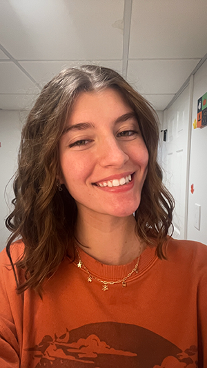

Charlotte Whitesel's AENG 110 Portfolio |
||
| Home Infographic Project Photo Project Video Project Bookmark Project | ||
|
 Student at Millersville University |
My name is Charlotte Whitesel and I am a Technology and Engineering Education major at Millersville University. This website is to showcase all of my projects throughout the semester in my Communication and Information Systems class. When I graduate I plan to teach locally in some kind of circuitry, robotics, or architecture class. In the future though I will probably have to move around since my boyfriend wants to go into the Air Force. I enjoy the Engineering part of my degree more than the Tech part. I do like using all of the Adobe softwares though. I own a small business where I make and sell my own handmade cards and stationery items. Since learning Adobe softwares in this class, I have been using them in my buisness often. I also have gotten into notepad making. In my free time I am often at a craft show on Saturdays. Other than that, I also enjoy watching lots of TV on Netflix, crafting, shopping, and spending time with family. In this class, I enjoyed learning about all the different softwares we used and that I have been able to use them outside of schoolwork. Below I linked my buisness website I made, but it is made in Google sites so it was much more beginer friendly. | |
|
© 2025 Charlotte Whitesel | ||